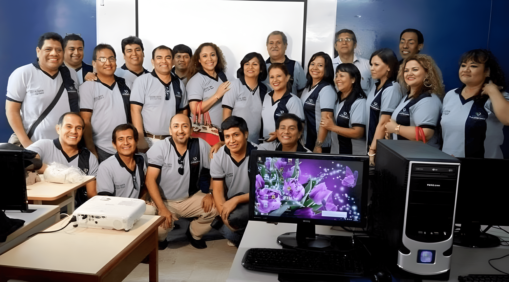
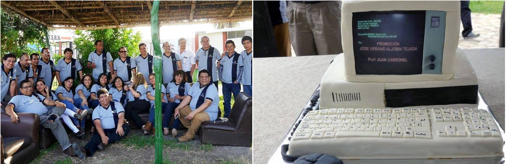

Antes de empezar con este pequeño diálogo mi agradecimiento a Pablo Ramírez y Manuel Borja por hacerme partícipe de su iniciativa. Gracias.
Otra vez nos reuniste nero, como si fuese ayer cuando estábamos en salón del 4to piso del INSTEA, junto a los laboratorios y un piso antes de la azotea donde alguna vez Capucho Vila, bien al uniforme militar daba clases de pre militar, ahí muy cerca del Convento San Antonio, muy de mañana de ese 22 de Julio 2017 que quedará en la retina por mucho tiempo. Esta vez fue tu mamá la que estuvo sentada en primera fila, bien atenta y aplicada a lado de tus hermanas. Te cuento nero que escuchamos una “cátedra” a cargo del Profesor Ing. Segundo Rojas, el tema no podía ser de otra: “Metodología de la Programación” (dato curioso, no había plumones para la clase, claro después trajeron). La clase fue dictado bien clarito, como pa’ bruto, la temática fue en ese orden: Definición del problema -> Algoritmo-> Diagrama de Flujo -> Programa.
Para el desarrollo podíamos hacer uso de lo último en el laboratorio, los “Color Computer de Radio Shack” con su “Basic” nativo, eso sí, para el ingreso había que tener a la mano el ticket y estar al día en lo mensualidad, de todas maneras, teníamos a nuestro amigo (antes que profesor) Segundo Rojas que siempre nos apoyó como un hermano mayor, el que no tenía problemas era Rodrigo Tezén que luego fue laboratorista. Volviendo a lo que estábamos te cuento que el profe antes de la clase no pasó lista porque (supongo) confió en nosotros ya que acabábamos de “asistir” a misa a cargo de un sacerdote docente, de entre otras instituciones la USAT. La liturgia fue en memoria de aquellos que como tú nos antecedieron, dice que son seis. Imagínate nero, una misa en nuestro propio salón alado de todos los compañeros e invitados como la esposa e hija del Prof. Carbonell (que no puedo estar presente por motivos de fuerza mayor). El padre fue muy elocuente, nos aconsejó, bromeo mucho con nosotros sobre los “pelones”, las arrugas, felicitó a los organizadores de esta inolvidable reunión, resaltó la iniciativa y la importancia de congregarnos después de 30 años, pidió por la salud de los que estaban en clases y los que no pudieron asistir por algún motivo, también resaltó la importancia de realizar las cosas en el presente, resaltó la importancia de vivir plenamente el momento y que no sea la última reunión y las próximas se pueda extender hacia las familias, bacán cierto.
Luego vinieron los presentes (reconocimientos) a los invitados, primeramente, a tu mamá, luego al esposo hijo e hija de una de las chicas que también se nos adelantó, luego a la esposa e hija del profe Carbonell, finalmente al Prof. Segundo y Prof. Tito Suarez en representación de Abaco quien reconocemos su valioso apoyo en cedernos las instalaciones. Inmediatamente después Pablo y Lucho; iconos de la buena familia “Pavita San Fernando” no dudaron en darle trámite a los sanguchitos y gaseosa, bendición compartida con todos los presentes como siempre con el desinteresado apoyo de Consuelo. Cuando se case vamos a llevarle la cola y que cola…

Nero, Si ves la imagen anterior vas a tener una idea a cuantos se pudo convocar, ahí estamos en el laboratorio el cual pasamos después de concluido la visualización de fotos del recuerdo, ah en una foto se te ve bien “cofla” igual que mi compare Lucho, de quien no comprendíamos porque aparece en todas las fotos, sencillamente era porque era dueño de la cámara… igual se les ve bien a los muchachos, guapetones especialmente las chicas. De todas las fotos creo que hay varias en la quinta de Prado donde el muelón creo que se “mecho” con alguien, en fin, lo bueno que el tiempo y el perdón sanan las heridas.
Ah, te cuento otro dato curioso que lo resaltó Lucho, en una de las fotos se le ve a Helen con la inscripción USA en el polo, cosas de la vida no, ahora ella radica en los Unaited pero aun así nos honró con su presencia, besos para ella. Te cuento que está igualita (a su foto en el Facebook). También habría que agradecer y felicitar a Anthony por todo lo que ha logrado en la Argentina, que también tuvimos el placer de tenerlo con nosotros.
Creo que valió la pena el esfuerzo para esta reunión, nero, que como tu comprenderás es complicado hacerse de un espacio en sus quehaceres y viajar (quizás) cientos de Kilómetros para estar junto a quienes pasamos los mejores momentos hace 30 años y ahora pudimos cada uno (a petición de Manuelito Borja) expresar en contados 3 o 4 minutos la trayectoria de nuestras vidas después de este tiempo. La verdad que sigo sintiéndome orgulloso de pertenecer a este grupo humano y haber estudiado en el INSTEA que como bien resaltaron Lucho y el Profe Segundo, el hecho que muchos de nosotros “conseguimos” y nos desempeñamos en los trabajos principalmente como técnicos gracias a la “lógica” aprendida en las aulas.
Hasta ese momento no estaba el “increíble Hulk”, Saucedo y el recontra flaco César Goicochea que después nos contó que está trabajando en una minera allá por Cajamarca, está muy bien, pero “pelándose” de frio. Él y otros llegaron casi después del almuerzo allá en la quinta “Bobadilla” de Chiquitín Salazar, recontra lejos pero bien bonito, ups, nuevamente me aleje de la secuencia.
Donde estábamos, ah ya, estábamos en la sesión de fotos en el laboratorio, Lucho soltó una broma del Profe. Segundo sobre los tickets de pase, pero mejor no comentamos. Luego nos ubicaron a cada uno con su PC, como siempre las chicas adelante y al fondo los más revoltosos del turno de noche, parecíamos estrellas del cine con la filmación y los flashes en cada movimiento, fue emocionante sentarnos en lo que fue el despertar al maravilloso, sacrificado, emocionante y todo lo imaginado mundo de la computación e informática que nunca deja de evolucionar, quien lo diría nos sentamos frente a equipos que a decir verdad “el trabajo no sería sin estos”.
Como viste en la foto nero, hemos estado en buen número, a esas alturas era ya más del medio día, bajamos del (ahora) Instituto Abaco, abajo en la calle igual siguieron las fotos de rigor, nos despedimos de tu family que una vez más nos dijeron “perdimos un hijo, pero ganamos muchos en ustedes”. A que no te acuerdas, los muchachos recordaron (no sé tú, pero yo me había olvidado) que fuimos nosotros los que por primera vez hicimos una huelga ahí mismo en ese lugar (y quien no, con tal de no entrar a clases) por temas de mensualidades, no me acuerdo como terminó, pero Chozo le decía a Manuelito Borja “te acuerdas cuando nos sentamos en medio de la calle en frente a la salida del edificio…” qué tiempos aquellos, y seguro nos asombramos de los “escándalos” que pueden hacer nuestros hijos…
Luego el coordinador en jefe Pablo, que dicho de paso está con unos poquísimos kilos demás, ordenó subir al bus que nos trasladaría a la quinta Bobadilla, todo un chiste, algunos ya habían subido al bus cuando ordenaron bajar, faltaba la filmación a la subida (no era por falta de pasajes). A partir de ese momento empezó la travesía, cruzando la plazuela Elías Aguirre; curiosamente en dirección a Lambayeque, luego el bus giró en dirección a Sáenz Peña y de allí derechito por la San Juan hasta la salida a Ferreñafe por los paraderos a las cooperativas.
A propósito, te cuento nero, al salir de mi casa en dirección al Abaco, compre el comercio ya que el día anterior un amigo del trabajo (Edwin) me había dicho que ese sábado 22 iban a publicar un artículo de Pedrito Suarez, de veras que conmociona lo que le está pasando ya no puede hablar y teme que después no pueda movilizarse. Mientras viajábamos hacia la “Tierra de la Doble Fe” estuve leyendo y dice que su “estado” no lo toma como algo negativo sino más bien que “Tiene el privilegio de conocer el espectro completo de la vida” palabras profundas para quien pese a su situación ve a la vida desde otra perspectiva y yo con un poco de gripe ya no quiero moverme, debe ser la ruma (de años).
Siguiendo con el viaje, pasamos por Picci, luego llegamos y pasamos Ferreñafe, en ese trayecto Saucedo se estaba comunicando y lo saludamos (on line). Luego de encaminarnos hacia Pítico llegamos a la quinta, lo llamativo que en la portada había colocado 3 cabezas de animales con cuernos que como te puedes imaginar empezó la chacota. El ambiente de la quinta Bobadilla muy bonito, bien amplio. A la entrada, dispuestas en frente las mesas ordenadas en U, sobre la primera una torta con la forma de una PC, bien artístico. A la mano izquierda una pequeña cancha de fulbito de gras natural, al lado una piscina que lo vas a ver en las fotos. Al lado derecho un buen detalle que no he visto en otros centros de esparcimiento, una capilla de la Cruz de Bobadilla (si no me equivoco) y más a la derecha una granja de aves, vi dos pavos reales un ñandú muchos patos, gallinas palomas y otras aves…
Luego vino la sesión de fotos con la torta, (hasta ese momento no llegaban Hulk y compañía), más tarde una vez todos acomodados en sus lugares nos sirvieron un ceviche con tamalito que para que te cuento, exquisito, en su punto, luego otra ricura de potaje norteño, un arroz con pato ummm riquísimo, lógico, previamente hubo las palabras y el brindis de rigor, pero creo todos ya mirábamos por donde llegarían los platos. Previamente acercaron las mesas para no sentirnos “distanciados”. En un espacio al costado del “comedor” techado de hojas de coco, salió una “chiquita” a cantar música criolla, al principio todos con los aplausos pero luego llegaron los platos y cada quien a lo suyo, aun así disfrutamos de los temas pues cantaba muy bonito, lástima que no estábamos empilados porque si no, le hacíamos el coro u otro más osado como mi comparito Pablo le quitaba el micro, cosa que no hubo motivo por que más tarde se adueñó del micro y nos deleitó (cumpliendo su promesa) con dos canciones. Lo que todavía no masticamos bien es porque después de 30 añicos no se ha memorizado su canción emblema (…tú y yo estamos loooocos de amor…) que tuvo que hacer uso de la tecnología, igual sigue encantando con su voz que hasta hubo gritos, desmayos y todo eso que en su momento ocasionaba en una chica bien grande y bonita que no quiero decir su nombre.
Ya casi terminábamos de almorzar cuando hizo su aparición César Goico, parecía que el viento lo había “movido” un poco, basto dos vasos y mi comparito ya estaba más alegre que perro con dos colas. Luego pasamos a la sesión de fotos (tantas fotos no) primero en los sillones, Lucho sentado en el piso y quien lo levanta ahora. Después más fotos al borde de la piscina. Ahora si nos pusimos nuevamente cómodos en el “comedor” y a “chupar” perdón a libar cerveza se ha dicho. “...tome con moderación” dice en la etiqueta, pero quien hace caso, salvo el Profe. Segundo que ya no puede disfrutar de ese placer por temas de salud además porque es quien llevaba la caña de su nissan.
Así pasaron las horas entre bailes, bromas, recuerdos, chacotas con el “caballo viejo” o burja-burja-burja, o a mi comparito zapatón César Palacios. A propósito, un reconocimiento a César que está en lo suyo “El arte visual y digital” trabaja en la “Pedro” y particularmente. Ah, me olvidaba, en un momento del almuerzo Chiquitín (dueño de la quinta) nos dijo “Bien venidos a su casa, estamos para servirlos” a lo que el muy oportuno y con la chispa que lo caracteriza Lucho subrayo “así, entonces aquí nos quedamos” a lo que Chiquitín muy inteligentemente replico, “no se preocupen que a partir de las 7 pm. Llegan unos bichitos que se encargarán de sacarlos”. Cuánta razón tenía, apenas se ocultó el gringo (sol) aparecieron silenciosamente nuestros parientes los zancudos, y sabes porque parientes, porque “joden y joden y llevan tu sangre”.
Así, ya bien tarde llego Janer Ballesteros sin su balón de básquet, una felicidad más al ruedo de baile y brindis, luego paso algo inesperado pudimos degustar de unos ricos picarones propicio para la hora, un punto más entre nuestros agradecimientos a los organizadores, no olvidaron ningún detalle hasta sortearon un equipo móvil de la importante empresa Claro, y el suertudo quien más sino Chozo, lo que no sabemos (como dijeron en chacota) si funciona o no, pero todo estuvo bien organizado. Lo que se perdieron los que no fueron…

Ya estábamos para salir e hizo su aparición el increíble Hulk, bastante “cofla” pero con la sonrisa de oreja a oreja como siempre. Oscar siempre un abrazo y un reconocimiento por las peripecias que pasaste para llegar, aunque sea en los momentos finales, pero llegaste, otra historia supongo fue más tarde en el Rumba y Sabor.
La foto final (creo) pudo estar completo con Juancho, tú (donde estés), Hulk, Muelón y Yo. A propósito, nero, se le extraña a Juan un montón, Dios nos de salud y próximamente nos podamos reunir. De todos modos, como ya estarás imaginando nero, la (“parejita”) emblema Muelón y Helen, dos buenas personas que lo llevamos en nuestro corazón, siempre con la sonrisa en los labios y la alegría que los caracteriza.
Finalmente, el regreso fue otro cantar, ya con unos “pomos dentro” se hizo un poco menos pesado el viaje, entre molestar a Consuelo para que le dé su “torta” a su entrañable Hulk y el merecido descanso y recargo de pilas de mi comparito Goico se hizo rápido el viaje de retorno, derechito con destino al Rumba y Sabor, esto no se podía quedar así, era muy temprano para retornos y menos tarde para los que viajaban fuera de Chiclayo como mi comparito (me olvidé de su nombre) que vino de Trujillo. El antes de hacer su ingreso a tal divertido lugar de juergas hizo la honorable promesa de “una hora nomás y nos quitamos” merecidamente ya que nos comentó que hizo una larga y complicada travesía, después de salir de su chamba se tomó el tiempo para tomar cuanto carro pudo y cumplió como todo un caballerazo con estar, aunque sea por unos momentos con la gentita de la Promo “José Urbano Aljobin Tejada” del instituto Superior Tecnológico “Elías Aguirre” allá por los años 78.
Los mejores recuerdos de los compañeros de clase que nos antecedieron, desde lo alto deben estar intercediendo por su familia y esperando que en un futuro los veremos y nos pondremos a recordar anécdotas pasadas con la ilusión de ver reflejado en nuestros hijos los logros obtenidos con la guía de nuestro Profe. Segundo (“capu”) y valioso apoyo de nuestro estimado asesor Juan Carbonell (“coyoyo”)
Las disculpas a las chicas y muchachos que no menciono en este pequeño relato, nuevamente las disculpas del caso. Este es un simple diálogo con Urbano para contarle algunos detalles que me toco pasar y para quien lea estas pocas líneas pueda tener más o menos una idea de lo que hemos pasado en esta significativa reunión. Los invito a compartir sus momentos y quizás podamos ir registrando más experiencias en algún repositorio.
Un amigo: Moisés Miguel “mochico, charapo” (y cualquier otro chaplín de clases).